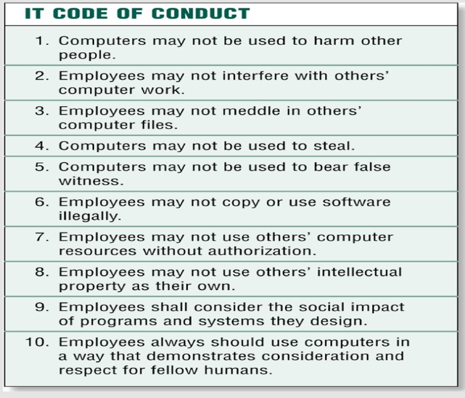

Qn32. What are ICT Ethics?
Moral guidelines that govern use of computers and information systems OR
Ethics is knowing and understanding what is right and what is wrong, and then doing the right thing right.
Qn33. Mention any three ethical principles
Qn34. State any five IT code of conduct

Qn35. Define information accuracy
Information Accuracy relates to “the correctness of the output information
Qn36. Define green computing
Green computing is the environmentally responsible and eco-friendly use of computers and their resources OR
It is also defined as the study of designing, engineering, manufacturing, using and disposing of computing devices in a way that reduces their environmental impact.